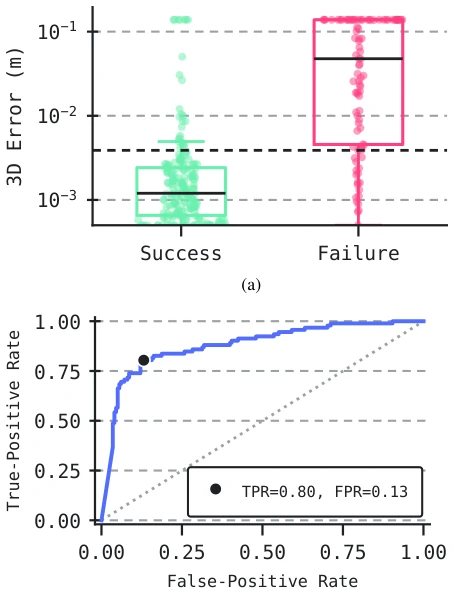
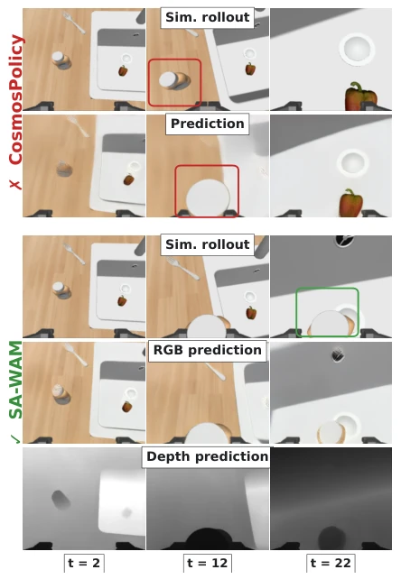
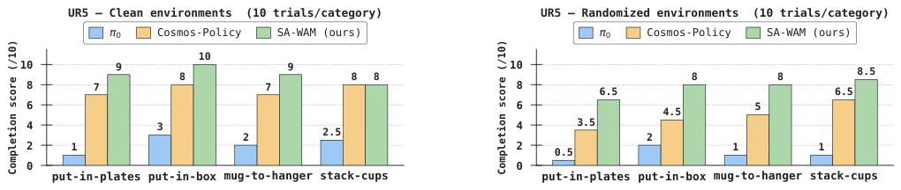
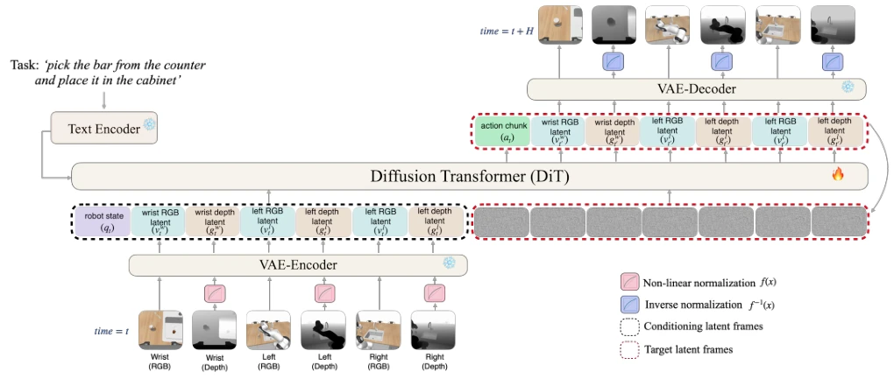

This paper forcibly equips WAM with "depth glasses". Existing WAMs are like nearsighted people, looking only at RGB and not 3D, leading to limited manipulation accuracy. SA-WAM does not employ a complex 3D encoder, but instead relies on nonlinear normalization to forcibly embed depth maps into the frozen VAE; this move is quite risky but effective. The results are indeed impressive, RoboCasa and LIBERO-Plus both top the leaderboard, and UR5 physical robot is stable. But do not celebrate too early, the old problem of slow diffusion model inference remains, and the authors themselves admit the problem of "inconsistent predicted futures" is not thoroughly solved. It counts as adding some spatial sense to embodied intelligence, but still falls short of a "perfect physics engine", belonging to "small steps, fast running" pragmatic improvement. However, whether this approach of not fine-tuning the VAE limits the expressive power of depth information is worth deep thought. After all, a frozen VAE may not perfectly represent the depth distribution, and forced normalization might just be a temporary measure.
Existing WAMs mainly rely on RGB observations, ignoring 3D geometric information, which is a fatal flaw in fine manipulation tasks. Although 3D-aware VLAs such as 3D-VLA [16] and SpatialVLA [17] have demonstrated the value of 3D, the WAM field is basically blank. Although Cosmos-Policy [14] is strong, it lacks explicit geometry, leading to decreased robustness in randomized environments. This paper aims to fill this gap, enabling WAM to possess spatial perception capabilities and improve policy robustness under random environments. Especially for grasping and placing tasks, object geometric relationships are crucial; ignoring depth leads to policies being sensitive to visual interference. In addition, existing methods mostly require multi-stage training, while SA-WAM attempts unified generation, simplifying the process. In the real world, lighting and texture changes frequently, RGB features easily fail, and introducing depth can provide more stable spatial cues.
方法Method
整体架构基于 Cosmos-Predict2 的 DiT 骨干，冻结 VAE tokenizer。输入包含任务指令、本体感知和 RGB-D 观测。核心创新在于深度编码：将无界深度通过非线性归一化（线性、逆深度、对数尺度）映射到 VAE 的有界输入域。实验表明对数尺度（log-scale）在近距离精度和远距离精度间取得平衡。深度图被编码为与 RGB 配对的 latent frames，与 proprioception 和 action chunk 一起送入 DiT 进行联合去噪。无需训练专用 3D 编码器，直接复用视频先验。训练目标同时监督动作、未来 RGB 和未来深度，实现统一生成。这种设计避免了模态特定模块，保持了预训练先验的完整性。通过这种方式，模型能够同时学习视觉动态和几何约束，增强了物理一致性。
The overall architecture is based on the DiT backbone of Cosmos-Predict2, with a frozen VAE tokenizer. Inputs include task instructions, proprioception, and RGB-D observations. The core innovation lies in depth encoding: mapping unbounded depth to the VAE's bounded input domain through nonlinear normalization (linear, inverse depth, log-scale). Experiments show that log-scale achieves a balance between near-distance accuracy and far-distance accuracy. Depth maps are encoded as latent frames paired with RGB, and sent to DiT for joint denoising along with proprioception and action chunks. No need to train a dedicated 3D encoder, directly reusing video priors. Training targets simultaneously supervise actions, future RGB, and future depth, achieving unified generation. This design avoids modality-specific modules, maintaining the integrity of pre-trained priors. In this way, the model can learn visual dynamics and geometric constraints simultaneously, enhancing physical consistency.

Fig. 4: Future-prediction quality correlates with rollout success. (4a) Object-centric 3D prediction error is lower for successful rollouts. (4b) A threshold on this error detects failures with AUC ≈0.88 and an operating point of 80% detection at 13% false positive rate.
On RoboCasa and LIBERO-Plus simulation benchmarks, SA-WAM achieves SOTA with 50 demonstrations per task, surpassing Cosmos-Policy by 9.5 points. Ablation experiments show that log-scale depth normalization performs best. In real-world UR5 experiments, SA-WAM significantly outperforms the baseline in randomized environments, proving that depth information helps eliminate visual interference. In addition, the correlation between prediction quality and rollout success is analyzed, where low 3D error corresponds to high success rate. PSNR and SSIM metrics also show future state prediction is more accurate. In LIBERO-Plus zero-shot evaluation, SA-WAM reaches 86.6%, far exceeding other VLA models. These results verify the effectiveness of explicit geometric information in improving WAM generalization capabilities, especially in complex scenarios.

Fig. 3: RoboCasa pick-and-place task: Pick the condiment bottle from the counter and place it in the sink. We show the wrist view before and during grasping, and at the final rollout stage. The upper block shows Cosmos-Policy and the lower block shows SA-WAM, with predictions compared against their corresponding simulator rollouts; for SA-WAM we also show depth predictions. Red boxes mark rollout inconsistencies, and the green box marks task completion.

Fig. 5: Real-world UR5 results. Task-completion scores over 10 trials per category for π0, Cosmos-Policy, and SA-WAM in the clean and randomized settings. SA-WAM retains the strongest performance under randomization, consistent with depth providing a complementary spatial cue in the presence of visually confusing distractors.
其他图片Other Figures

Fig. 2: SA-WAM architecture. SA-WAM injects geometry into the WAM latent sequence as tokenizer-compatible frames paired with each RGB view, while the proprioception (qt) and action chunk (at) are inserted directly into dedicated positions in the latent sequence. The conditioning signals include the task description (task), one RGB frame per view (vc t ) interleaved with its corresponding 3D modality (gc t ) and the proprioceptive information at time t (qt). The action chunk, future-state RGB (vc t′), and future depth (gc t′) frames undergo the denoising process. The decoding phase is optional at inference time.